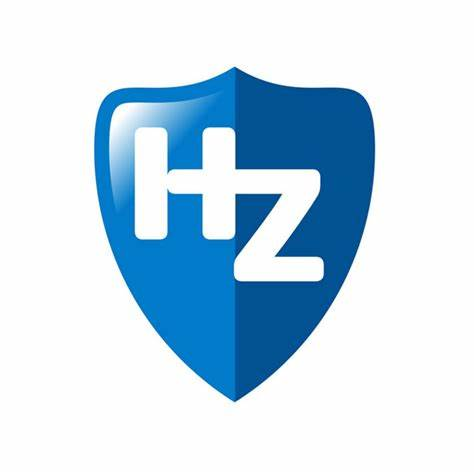
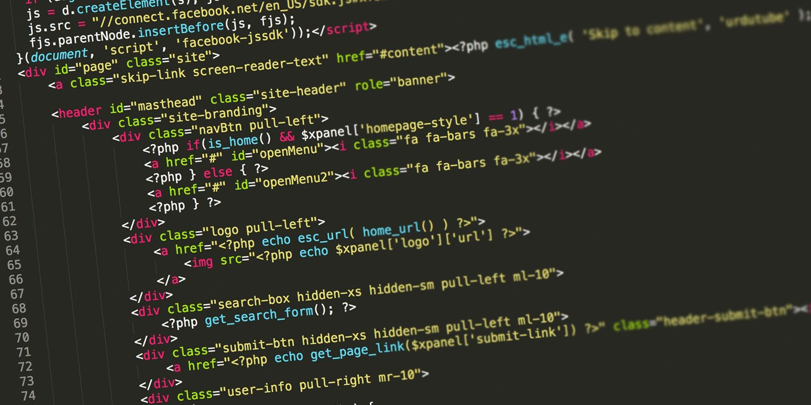

Wat kun je op deze website vinden:
- Wie ben ik?(profile)
- Studie dashboard
- Blogs
- FAQ
Waarom ik een ICT-opleiding wil doen en waarom het bij mij past?
Ik heb al van jongs af aan intresse in computers. In mijn vrije tijd ben ik of aan het gamen op mijn computer bezig, dan ben ik bijvoorbeeld video's aan het bewerken. Omdat ik zo graag met computers werk wilde ik daar iets mee doen voor mijn studie. Daarom leek deze ICT opleiding mij interessant.
Ik denk dat ik met deze opleiding nog meer kan leren over computers zodat ik nog meer kan met computers. Ook leek het me interessant omdat je met programeren van alles kan maken. Jaren geleden vond ik het al heel bijzonder om te zien hoe mensen plugins en mods maakten voor verschillende games die ik speelde. Ik vond het knap hoe hun uitbreidingen maakte voor mensen die de basis game voltooid hadden. Ik heb daar zelf toen nooit iets mee gedaan maar toen ik een vervolg opleiding zocht en ik ict zag heb ik eerst wat programeren geprobeert en realiseerde ik dat ik het leuk vond. Daarom wilde ik verder gaan en er meer van leren van programeren door middel van deze ICT-opleiding.  